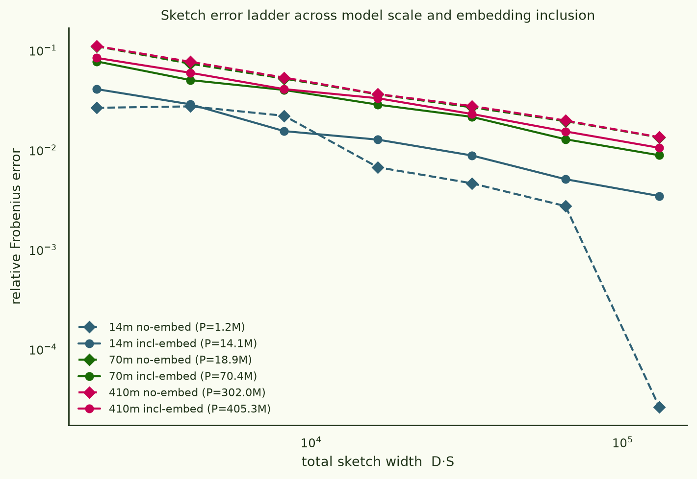
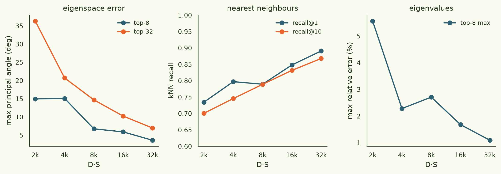
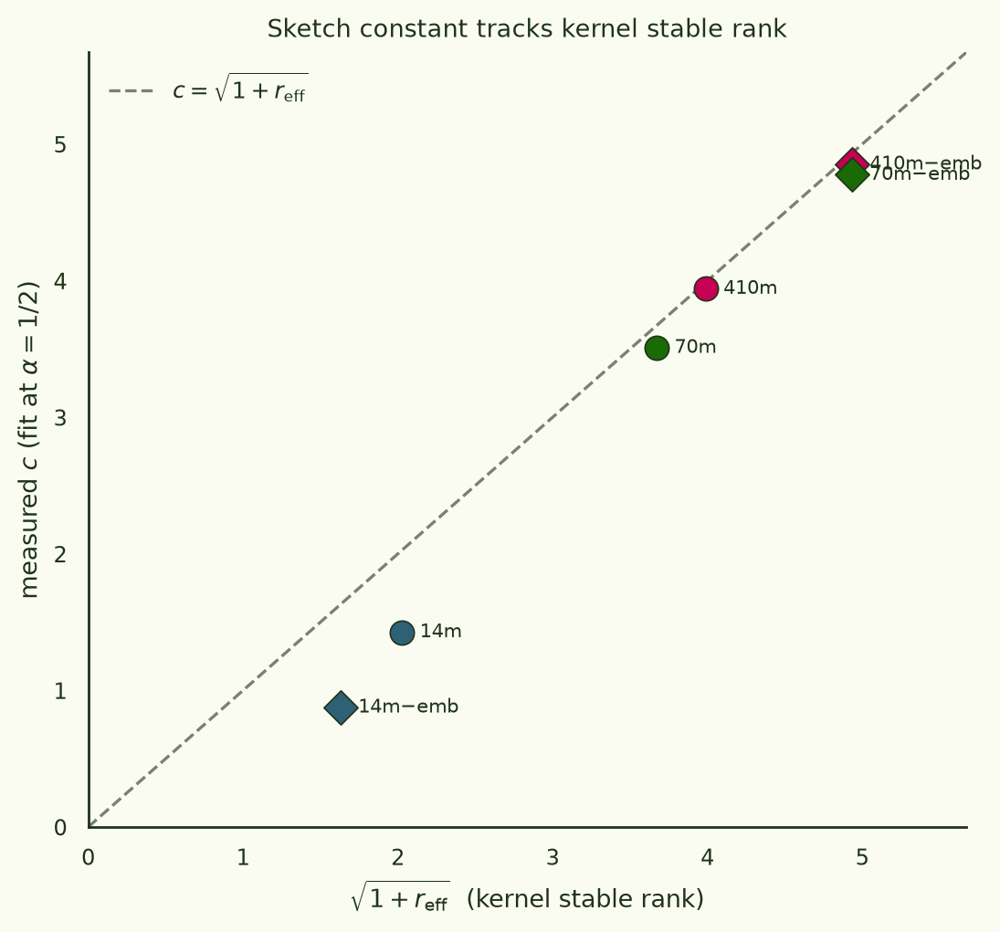
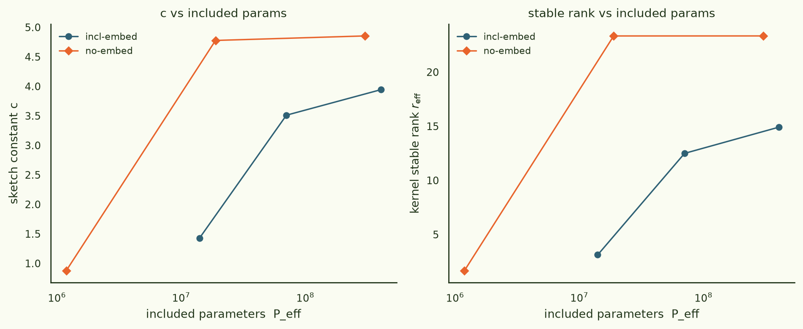
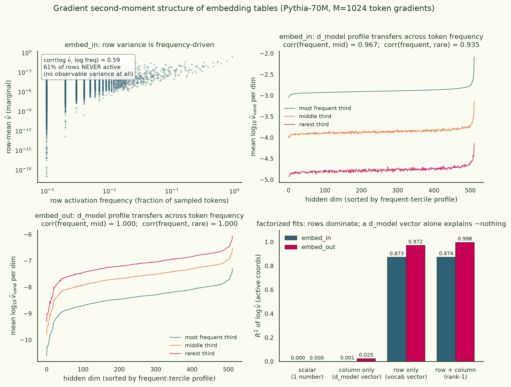
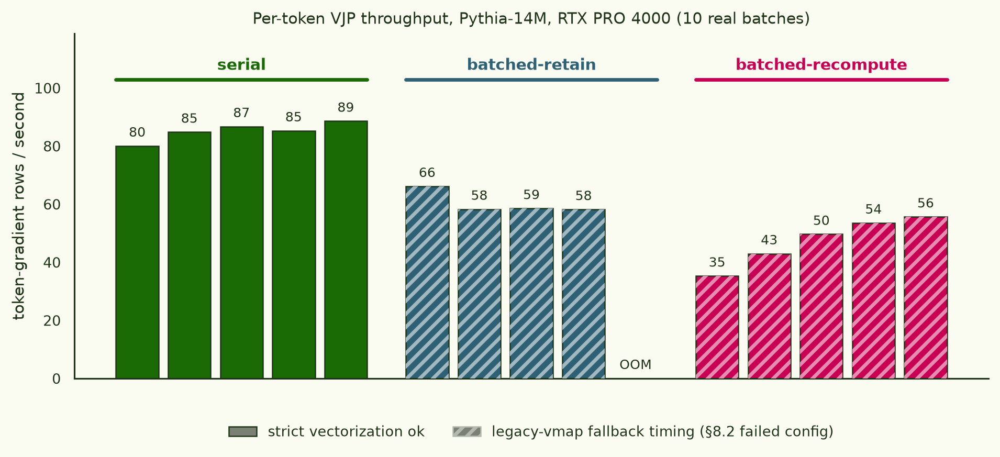

A sketch-error law for gradient kernels
We want N×N similarity matrices of per-token gradients of language models — each selected token position is a datapoint, its gradient one row, and the kernel entry Gij = gi⊤diag(q)gj a inner product in parameter space. Rows are compressed the moment they exist with , so the Jacobian never materializes. This page started as a Pythia-14M pilot ("how wide a hash buys a 1% kernel?") and is now the full study: a 3×2 grid of models (14M / 70M / 410M, embeddings included or frozen out), plus gradient-tail statistics, factored-preconditioner tests, and a measured cost model for the Pythia-1.4B production run.
Sketch error obeys relF ≈ c/√(D·S) at every scale tested, and the constant is a property of the kernel you are estimating, not of the model: c ≈ √(1 + reff), where reff = tr(G)²/‖G‖²F is the kernel's stable rank.
TL;DR — the conclusions, then the evidence:
- The √-law holds from 1.2M to 405M hashed parameters. At 410M the fitted exponent is α = 0.502 (embeddings in) / 0.485 (embeddings out) — pure behaviour, no drift with scale (§2).
- The constant is the kernel's stable rank: c ≈ √(1+reff), verified within 1–2% at 410M and ~4% at 70M; the 14M runs sit below the law because there D·S is no longer ≪ P and the sketch starts beating JL (α ≈ 1.13 for the 1.2M-dim no-embed run) (§3). You can measure reff from a few hundred exact rows and predict the width any target accuracy needs.
- reff without embeddings is flat ≈ 23.3 from 18.9M to 302M included params. Read as a plateau, Pythia-1.4B needs D·S ≈ 243k for a 1% kernel; read as a power law, ≈ 714k. We treat the plateau as likelier and the power law as the conservative bound (§4, §8).
- Freeze the embeddings out. Including them lowers reff (they add a shared component) but poisons coordinate : 61% of vocab rows never fire in the preconditioner sample, get the ε-floor, and become heavy hitters (p99 max|x|/‖x‖ = 0.85 at 14M with embeddings vs 0.22 without; 0.75 vs 0.08 at 70M) (§4, §7).
- ~3k gradient samples suffice for the preconditioner (10% rel-SE at the transformer's median per-coordinate kurtosis κ ≈ 27–34); the κ tail (p99 ≈ 270–430) wants ~27–43k. Embedding coordinates are censored — for rare tokens κ is unmeasurable at any reasonable M — one more reason to exclude them (§5).
- The preconditioner factorizes. A per-tensor scalar fails (kernel correlation 0.33 with embeddings, 0.90 without); an Adafactor-style rank-1 factorization holds (0.94 / 0.992; kNN@1 70% / 86%; ~88–90% of transformer coordinates within 2× distortion) and applies to the VJP vectors before the outer product — ~300 KB of state at 1.4B instead of a 2.8 GB fp16 buffer (§6).
- Cost, measured: serial VJP throughput is flat at ~83–85 rows/s from 1.2M to 70M included params (latency-bound), and hits the FLOP wall by 400M (~19–20 rows/s on A100-80GB). A 4.25M-row Pythia-1.4B run prices at ≈180 A100-hours (VJP floor) to ≈350 A100-hours with synchronous hashing — roughly $250–480 — vs a reported ~4,800 H200-hours for the SGLD estimate of the same object (§8).
§1The object, and why sketch it
The motivation is Timaeus-style developmental interpretability: their and susceptibility-spectroscopy line computes essentially this kernel over 4.25M Pile token-contexts of Pythia-1.4B by SGLD sampling. To first order, the loss-fluctuation covariance those samplers estimate is a preconditioned gradient Gram matrix — attackable directly with explicit gradients if the rows can be stored. They can't (4.25M × 1.4B fp32 ≈ 24 PB), so each row is compressed as it is produced:
- Preconditioner. A frozen diagonal second moment v = 𝔼[g²]; rows are scaled by √q with q = (v+ε)−1 normalized to mean 1 — Adam/Fisher geometry, and variance armour for the sketch.
- CountSketch, D tables × width S. Each coordinate hashes () to one bucket per table with a random sign; the feature is the 1/√D-scaled concatenation, and ẑi⊤ẑj is an unbiased, linear estimator of Gij.
- No materialization. A fused Triton kernel reads each gradient once, scales, hashes, and atomically accumulates into the [C, D, S] output; exact preconditioned row norms ride alongside so correlation kernels normalize by exact diagonals.
- models
- EleutherAI/pythia-{14m, 70m, 410m}, each run with embeddings included and with embed_in/embed_out frozen out ("no-embed"). Peff = hashed params only: 14.1M/1.2M, 70.4M/18.9M, 405.3M/302.0M
- data
- NeelNanda/pile-10k, packed 512-token sequences
- exact subset
- N = 256 token losses (120/128 at 410M — a 200 GB memmap guard); exact grads on disk, kernel in fp64 on GPU
- sketch ladder
- one pass at S = 32,768, D = 4, folded offline to S = 512…16,384; fp32 accumulate, fp16 store
- preconditioner
- second moment, 256 per-token samples, ε = 1e-8, fp16 runtime
- hardware
- RTX PRO 4000 Blackwell 24 GB (14M pilot, tails, factored tests) + A100-PCIe-80GB ×2 (70M/410M ladders), torch 2.13 cu130
- code
- ArcadiaImpact/gradient-kernel
Two methodological details do most of the work. Nested widths: buckets are hash & (S−1), so a sketch computed once at S = 32,768 folds offline to every smaller power of two — each model's entire width ladder is one gradient pass. Same-pass validation: exact rows and sketched features come from the same gradient tensors, isolating sketch error from gradient nondeterminism entirely.
§2The error law across scale

The fitted law per run, with c also refit at the theoretical α = 1/2 for comparison. Peff counts only the parameters actually hashed — when embeddings are frozen, they contribute neither gradient mass nor sketch dimension, so the no-embed 410M run is a 302M-dimensional problem, not a 405M one:
| run | Peff | N | α (free) | c (α=½) | reff | √(1+reff) | incoh. p99 | rows/s |
|---|---|---|---|---|---|---|---|---|
| 14M incl | 14.1M | 256 | 0.56 | 1.43 | 3.11 | 2.03 | 0.85 | 84.9 |
| 14M −emb | 1.2M | 256 | 1.13 | 0.88 | 1.65 | 1.63 | 0.22 | 84.0 |
| 70M incl | 70.4M | 256 | 0.55 | 3.51 | 12.5 | 3.67 | 0.75 | 81.9 |
| 70M −emb | 18.9M | 256 | 0.48 | 4.78 | 23.3 | 4.93 | 0.08 | 85.4 |
| 410M incl | 405.3M | 120 | 0.50 | 3.94 | 14.9 | 3.99 | 0.38 | 19.3 |
| 410M −emb | 302.0M | 128 | 0.49 | 4.85 | 23.3 | 4.93 | 0.08 | 20.1 |
At 410M the free-fit exponents bracket ½ to two decimal places. The 14M no-embed α = 1.13 is not noise: with Peff = 1.2M, the widest folded sketch (D·S = 131k) is only 9× smaller than the space it compresses, and the error collapses super-JL (visible as the dashed dive in Fig. A). That regime is a bonus at small scale, an irrelevance at 1.4B.
Width still buys downstream quality the way the 14M pilot measured it — top-8 eigenspaces are within a few degrees by D·S ≈ 8–16k while kNN recall@1 keeps climbing through the widest sketch (0.90–0.97 at D·S = 131k across the grid, N-subset dependent): eigenspace work is cheap, neighbour work is expensive.

§3The constant is the kernel's stable rank

Why this law? CountSketch's inner-product estimator has a second-moment identity: the variance of ẑi⊤ẑj is (‖xi‖²‖xj‖² + (xi⊤xj)²)/(D·S) up to collision terms. Summing over all pairs and normalizing by ‖G‖²F turns the first term into tr(G)²/‖G‖²F = reff and the second into 1, giving relF² ≈ (1 + reff)/(D·S). A kernel of correlated rows — a big shared gradient component, so tr(G)² ≫ ‖G‖²F·1 — is harder to sketch at fixed relative accuracy, because the Frobenius norm you normalize by is concentrated in fewer effective directions. The practical payoff: reff is measurable from a few hundred exact rows (one afternoon at any scale), and then the width for any target error is (√(1+reff)/ε)².
§4Scaling — and the embedding paradox

Two readings for 1.4B (no-embed Peff = 1.21B): a power-law fit through the three no-embed points gives reff ∝ P0.48 → reff ≈ 70, c ≈ 8.4; the plateau reading gives c ≈ 4.9. But the power-law fit is dragged entirely by the 1.2M-param point — from 18.9M to 302M (a 16× range) reff moved by less than 0.1%. The gradient kernel's effective dimensionality looks like a property of the task and data, not the parameter count, once the model is big enough. We plan with the plateau and carry the power law as the conservative bound (§8).
The embedding comparison resolves into a clean recommendation. Including embeddings lowers reff (14.9 vs 23.3 at 410M) — embedding gradients are dominated by a component shared across tokens, which concentrates the kernel. That actually makes the incl-embed kernel slightly easier to sketch. But it is the wrong kernel to want: the shared component is exactly the part that carries no per-token information, and the price of keeping it is coordinate pathology. In the preconditioner, never-active embedding rows (61% of the vocab in a 1,024-sample estimate at 70M — §5) receive the ε-floor q = 1/ε, orders of magnitude above every live coordinate, and any rare token that does fire at kernel time becomes a heavy hitter: p99 incoherence 0.85/0.75/0.38 with embeddings vs 0.22/0.08/0.08 without, at 14M/70M/410M. CountSketch's known failure mode is colliding heavy hitters; D = 4 tables absorbed it at every scale we ran, but there is no reason to carry the risk. Production: freeze the embeddings.
§5How many gradients does the preconditioner need?
The preconditioner is a per-coordinate mean of squares, so its sample complexity is set by the per-coordinate kurtosis κ = 𝔼[g⁴]/𝔼[g²]²: the relative SE of v̂ after M samples is √((κ−1)/M). We streamed exact fourth moments for every coordinate of Pythia-70M (M = 1,024 incl-embed; M = 512 no-embed):
| group | never active | κ p50 | κ p99 | M for 10% v̂ | M for 10% (p99) |
|---|---|---|---|---|---|
| transformer (incl run) | 0.0% | 34 | 428 | 3.3k | 43k |
| transformer (no-embed run) | 0.0% | 27 | 269 | 2.6k | 27k |
| embed_out | 0.7% | 393 | ≥M | 39k | censored |
| embed_in | 60.9% | ≥M | ≥M | censored | censored |
Transformer coordinates are heavy-tailed but tractable: ~3k token gradients buy a 10% preconditioner at the median κ, ~30–40k cover the p99 tail. Embedding statistics are censored — a coordinate that fires once in M samples has measured κ = M, and embed_in's κ distribution is pinned at the ceiling (κ tracks 1/activation-frequency, corr(log κ, log freq) = −0.71). Encouragingly, the kernel itself is robust to v̂ noise at M = 1,024 — the ladder fits above were all run off a 256-sample preconditioner and still land on the law — because kernel entries average over millions of coordinates. The ε-floor pathology of §4, not estimator variance, is the real embedding problem.
§6Can the preconditioner be factored?
A full per-coordinate q costs a [P] buffer — 2.8 GB fp16 at 1.4B, held on every GPU. Two cheap approximations, tested against the full preconditioner on Pythia-70M (64-row exact-kernel A/B):
| variant | state | kernel ρ (incl) | kernel ρ (−emb) | kNN@1 (−emb) | coords within 2× |
|---|---|---|---|---|---|
| per-tensor scalar | ~100 floats | 0.33 | 0.90 | 66% | 50% |
| rank-1 (Adafactor-style) | ~300 KB | 0.94 | 0.992 | 86% | 88–90% |
| full per-coordinate | 2.8 GB fp16 @1.4B | 1 | 1 | 100% | 100% |
The rank-1 variant stores, per weight matrix, a row vector r and column vector c with v̂ = rc⊤/Σv — exactly Adafactor's moment factorization. It reproduces the kernel's off-diagonal structure at ρ = 0.94 (embeddings in) / 0.992 (out) and puts 88–90% of transformer coordinates within 2× of their true preconditioned scale (log-space R² median 0.92 per tensor). The per-tensor scalar collapses with embeddings present (ρ = 0.33, eigenspaces at 90°) and is mediocre without (ρ = 0.90, kNN@1 66%): within-tensor dynamic range is the whole game. One caveat: the no-embed rank-1 A/B shows a top-8 subspace angle of 85° despite ρ = 0.992 — near-degenerate eigenvalues swap order under small perturbations, so subspace angles overstate the damage there; the correlation and neighbour metrics are the honest summary.
The implementation detail that makes this free: a per-token weight gradient is an outer product δa⊤ of VJP vectors, so a rank-1 preconditioner applies as (√u ⊙ δ)(√w ⊙ a)⊤ — scale the two vectors before the outer product and the [P] preconditioned gradient never exists, not even transiently. Worst rank-1 fits are the stacked QKV matrices (relF 0.84 — three differently-scaled blocks sharing rows) and MLP up-projections (0.42–0.67); factoring QKV per-block is the obvious refinement and would likely close most of the remaining gap.
§7Inside the embedding tables

If one wanted to precondition the embedding tables cheaply anyway, could a single scalar or a d_model vector do it? No: a scalar explains 0% of the log-variance and a column (d_model) vector alone explains 0.1% (embed_in) / 2.5% (embed_out). The structure is token-dominated — row effects carry R² = 0.87/0.97, and embed_out is essentially exactly rank-1 (row+column R² = 0.998). The measurable part is encouraging: the column profile estimated from frequent tokens transfers to rare ones (corr 0.94–0.97 embed_in, 1.000 embed_out), and row scale tracks token frequency (corr 0.59), so unobserved rows could plausibly be filled in as (frequency-predicted row scale) × (shared column profile). That's a research option, not a production recommendation — freezing the embeddings remains the clean answer, and §4's kernel evidence says you lose nothing you wanted.
§8Throughput, and what 1.4B costs

is_grads_batched hits legacy-vmap
fallbacks on seven core backward ops, so every batched configuration
fails the spec's strict-vectorization rule and loses to
plain serial VJPs. Production backend: serial, chunk 4–16 — at
every scale in the grid.The surprising throughput fact: serial per-token VJPs run at ~83–85 rows/s on an A100 whether the model has 1.2M or 70M included parameters — the backward is latency-bound, not FLOP-bound, across that whole range. The FLOP wall arrives between 70M and 400M: both 410M runs land at 19–20 rows/s. Notably 302M and 405M differ by only 4%, so even at 400M the scaling is shallower than 1/P; extrapolating 1/P from the 405M point (6.5 rows/s at 1.4B) is therefore a conservative floor assumption.
Sketching overhead is no longer negligible at the wall. The fused Triton hash sustains 35–61 GB/s at K = 405M on A100 (vs 2.5–9 GB/s for the PyTorch reference) — but the VJP now produces gradients at 19.3 rows/s × 1.62 GB/row ≈ 31 GB/s, so hashing synchronously adds ~50–90% depending on width (it was 11.6% at 14M, where the VJP only produced 4.8 GB/s). Because rows/s falls as 1/P while bytes/row grows as P, this ratio is scale-invariant past the wall: budget 1.5–1.9× the VJP time unless the hash is overlapped onto a side stream (it is memory-bound while the VJP is matmul-bound, so overlap is realistic engineering, not wishful thinking).
The width decision, using §3's law with the §4 readings (no-embed, Peff = 1.21B), and fp16 feature storage for 4.25M rows:
| target relF | c reading | D·S needed | concrete (D=4) | achieved | features on disk |
|---|---|---|---|---|---|
| 2% | plateau c≈4.9 | 61k | S = 16,384 | 1.9% | 0.56 TB |
| 1% | plateau c≈4.9 | 243k | S = 65,536 | 0.96% | 2.2 TB |
| 1% | power-law c≈8.4 | 714k | S = 262,144 | 0.82% | 8.9 TB |
Nested folding removes the risk from this choice: sketch once at the largest width you can afford to store, check c on a small exact subset, and fold down if the plateau reading holds. The compute bill, at the conservative 6.5 rows/s per A100:
| hardware | VJP floor | w/ sync hash | wall-clock (8 GPUs) | ≈ cost |
|---|---|---|---|---|
| A100-80GB (measured) | 182 GPU-h | 275–345 GPU-h | 23–43 h | $250–480 |
| H100 (estimated ~2.25×) | ~81 GPU-h | ~120–155 GPU-h | ~10–19 h | $200–370 |
The H100 row scales the A100 measurement by a nominal 2–2.5× FLOPs ratio and is an estimate, not a measurement. Everything is data parallel with zero gradient synchronization, so nodes multiply trivially. The preconditioner pass is a rounding error: ~3k rows at 6.5 rows/s ≈ 8 minutes (even the 27k-row tail-grade estimate is ~70 minutes). Against the ~4,800 H200-hours reported for the SGLD-sampled susceptibility version of this object, the sketch route is roughly 20–40× cheaper even at the synchronous-hash ceiling — and, unlike our earlier 14M-only extrapolation (which priced 1.4B at ~1,330 GPU-h by assuming cost ∝ P from 14M), this number is anchored on measured 400M-scale throughput and a measured flat region below 70M.
§9Methods deltas, caveats, next
- 410M exactness limits. The exact subset shrank to N = 120/128 rows there (a deliberate 200 GB guard on the exact gradient memmap); the exact kernel is computed in fp64 on GPU by column-streaming. reff estimates at N ≈ 100–256 are stable across the grid but are still finite-N estimates of an asymptotic quantity.
- Two scale cliffs found and fixed on the way up: CUDA's 65,535 limit on grid axis 1 (the fused hash kernel indexed column tiles there; 405M params needs 1.6M tiles — axes swapped, regression test added), and a fixed 32-row VJP chunk that allocated 52 GB at P = 405M (now bytes-budgeted). Both are the boring kind of bug that only exists above 100M parameters.
- Serial VJP is the production backend at every scale tested — torch 2.13's batched-grad path still falls back to legacy vmap on core backward ops. Worth re-testing each torch release; a layerwise-fused backward remains the big unexploited win.
- The stable-rank law is empirical here. The second-moment argument in §3 predicts the (1+reff) scaling but we have not chased the collision corrections; four points on the line across 16× in Peff and two embedding regimes is strong but not a proof. The 1.4B run itself will be the fifth point.
- Sketch-vs-SGLD agreement is still unmeasured — we built the cheap estimator of the object; the head-to-head against SGLD-based susceptibility kernels on a small Pythia is the next scientific step. Next up on this thread: conductance clustering on these sketched kernels (Timaeus-spectroscopy-style), which is what the kernel was for.
scripts/analyze_ladder_grid.py).
Run artifacts · arcadia-impact/gradient-kernel-pythia14m-pilot-20260713 (14M pilot; grid/tails/factored uploads follow the same org pattern; private).
Figures ·
scripts/{analyze_ladder_grid, make_embed_structure_fig, make_vibe_figs}.py ·
pods zemn58cbsa (RTX PRO 4000), l25l320cz + fd5tu5rd (A100).